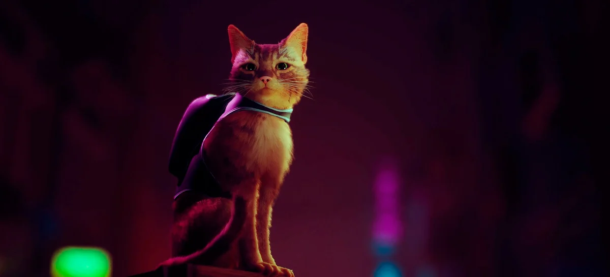

Uma aventura felina
Stray é um futuro jogo eletrônico de puzzle, simulação e aventura em terceira pessoa desenvolvido pela BlueTwelve Studio e publicado pela Annapurna Interactive. O jogo está agendado para ser lançado em 2021 para Microsoft Windows, PlayStation 4 e PlayStation 5.